金・土・日、および祝日 11:30〜 ご注文は14:00まで
手打ち蕎麦屋「古民家 憩いの杜 ふるさと駒」と申します。雑木林を背にした一軒でございます。
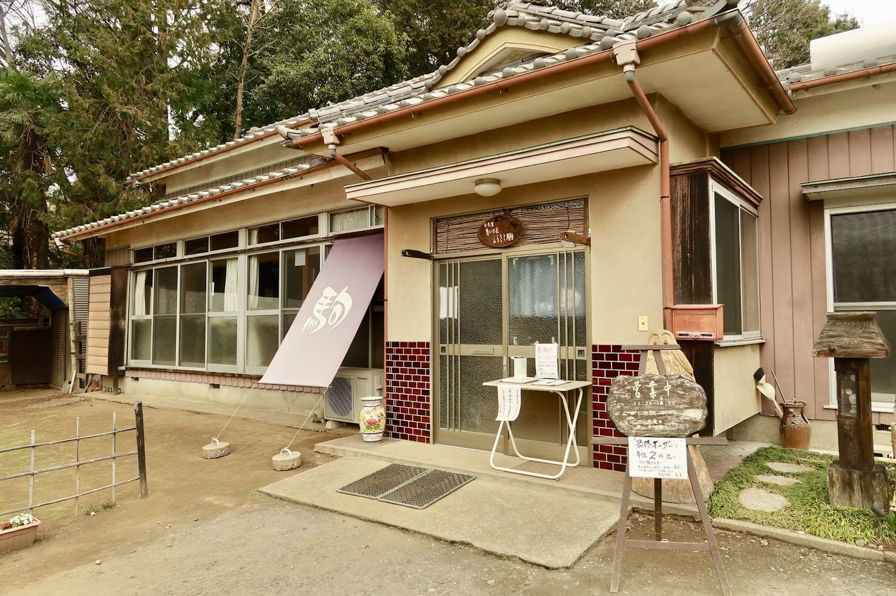
01
長いあいだ、空き家になっていた古い家でございました。
この家を、みなで一年かけて、自分たちの手で直しました。
令和三年の春から、ここで蕎麦をお出ししております。
卓にはひとつずつ、土地の名前を付けてございます。
卓ごとに、らくがき帳を置いております。
お蕎麦をお待ちのあいだ、どうぞごゆっくりなさってください。
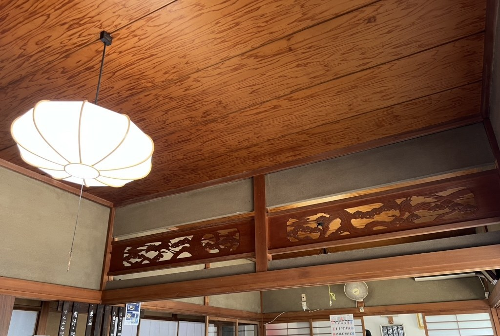
02
お出ししているお蕎麦は、もりそば一本でございます。名人とその弟子が打っております。
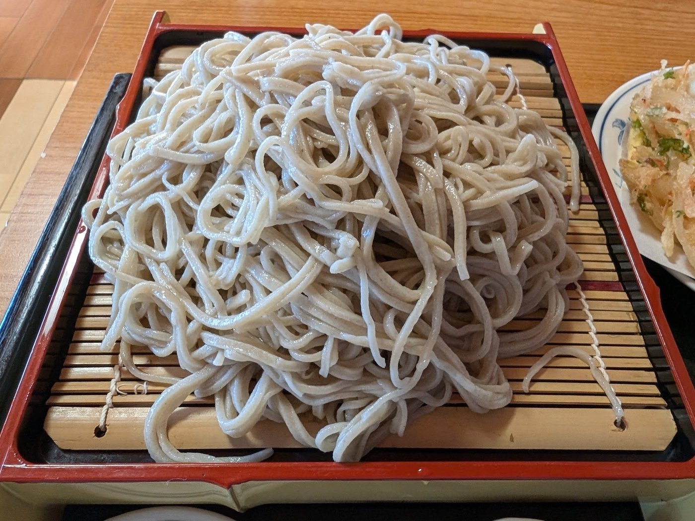
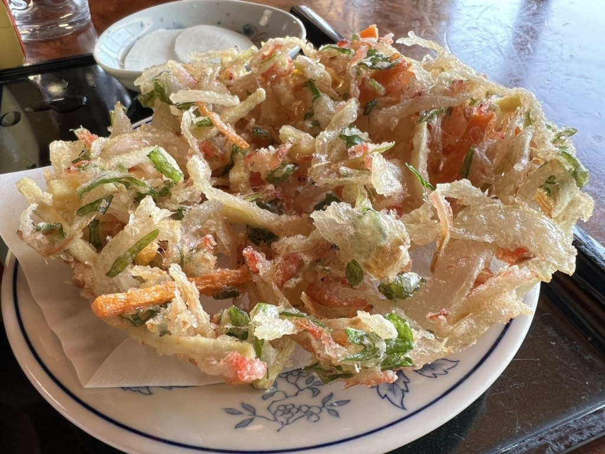
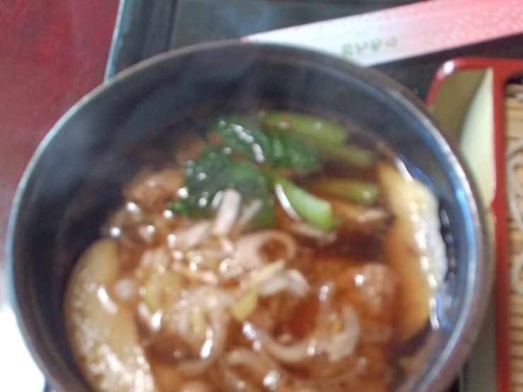
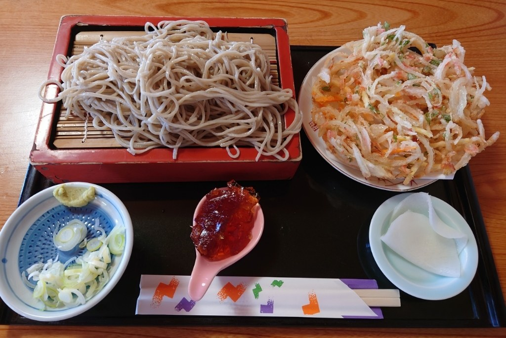
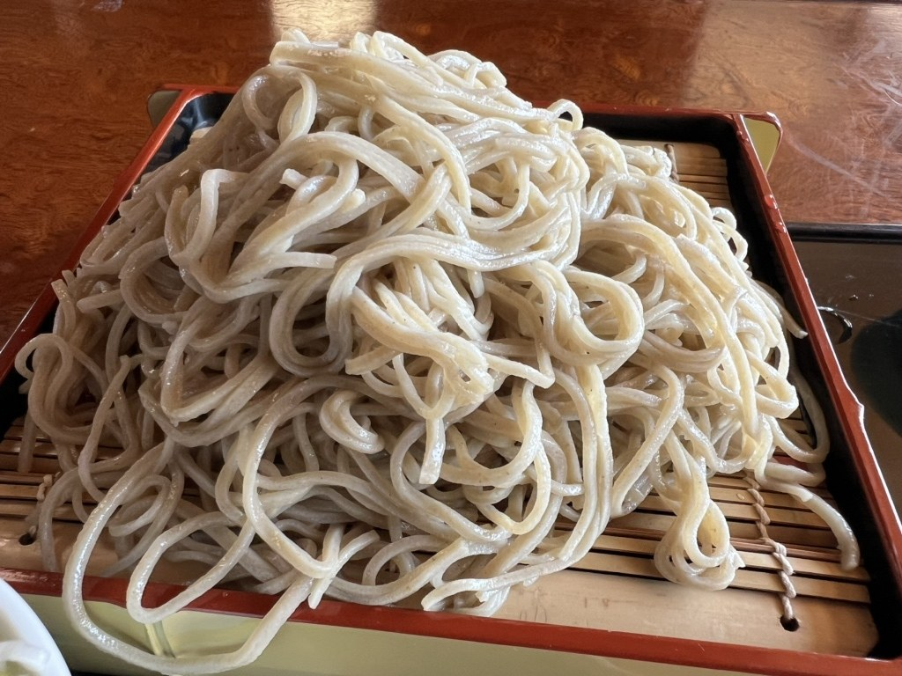
03
薬味は白ねぎとわさび、お新香を添えております。天ぷらは、つゆのジュレでも、卓の岩塩でもお召し上がりいただけます。
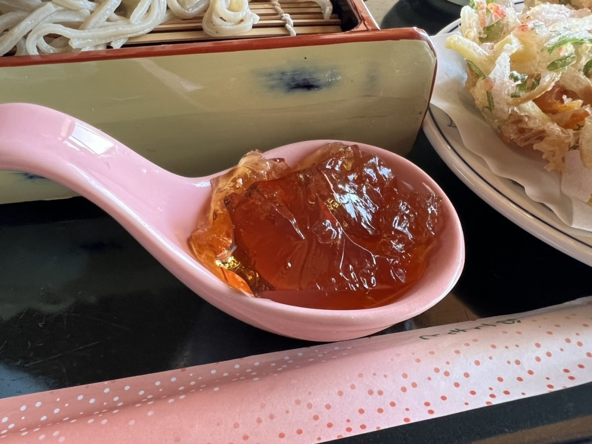
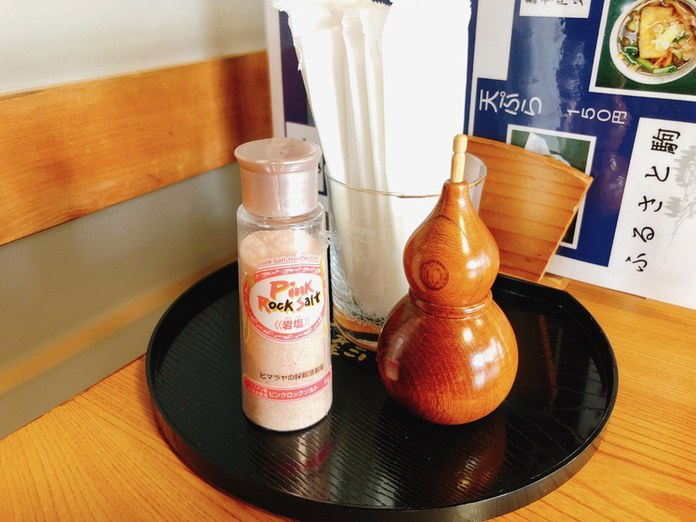
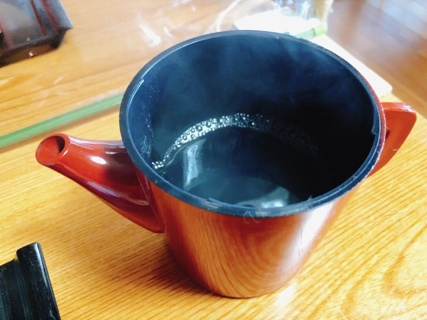
04
カウンター席とテーブル席をご用意しております。全席禁煙でございます。お子様連れの方もどうぞ。
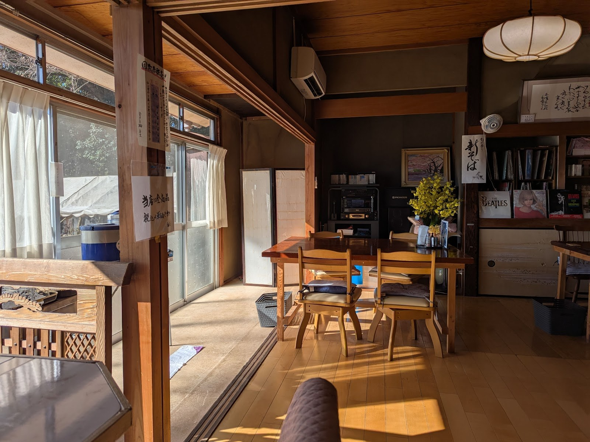
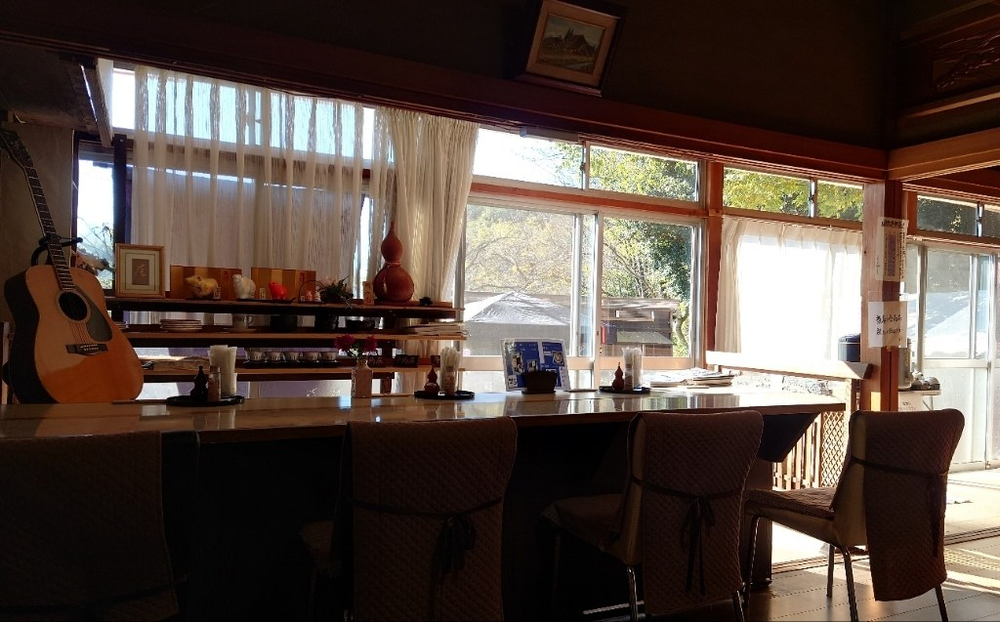
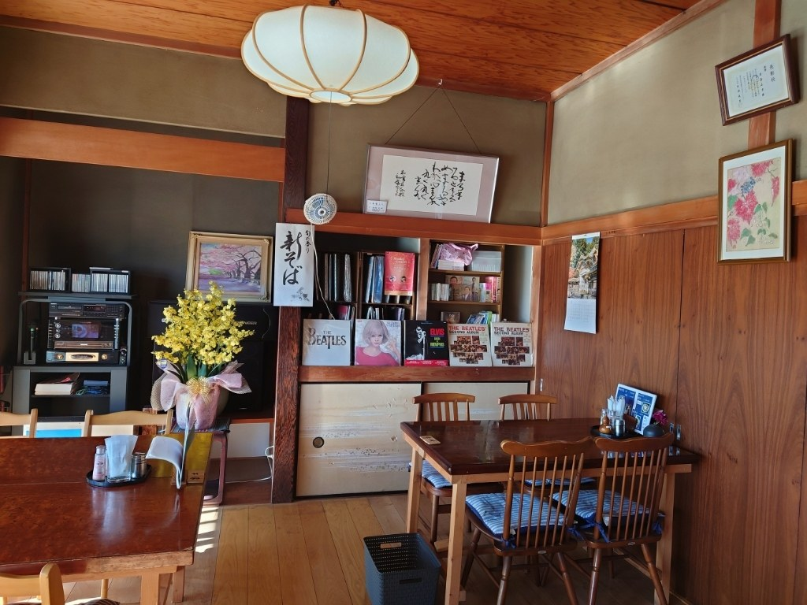
06
「風味上等。7月の蕎麦として上出来。」
— 食べログ 五井コエチア／2021年7月訪問／★3.0
「喉越しが良くサラサラ食べれました」
お客様の声より
「蕎麦湯ももちろん出してくれました たっぷり入っているのがいいですね」
お客様の声より
「香りがよいので何もつけずに1本すすると、そばの香りが鼻から抜けるのを感じた」
お客様の声より
「冷たくしめられたそばはコシがあり喉ごしもよくとても美味しい」
お客様の声より
「蕎麦はほのかに香って、麺はしっかり、のどごしも良でした。」
お客様の声より
07
金・土・日、および祝日、午前十一時三十分から開けております。
ご注文は午後二時まで承っております。お蕎麦が無くなりましたら、その日はそこで終いとさせていただいております。
開けて間もなく、席が埋まってしまう日がございます。
お車をお停めいただけます。お支払いは現金のみでございます。
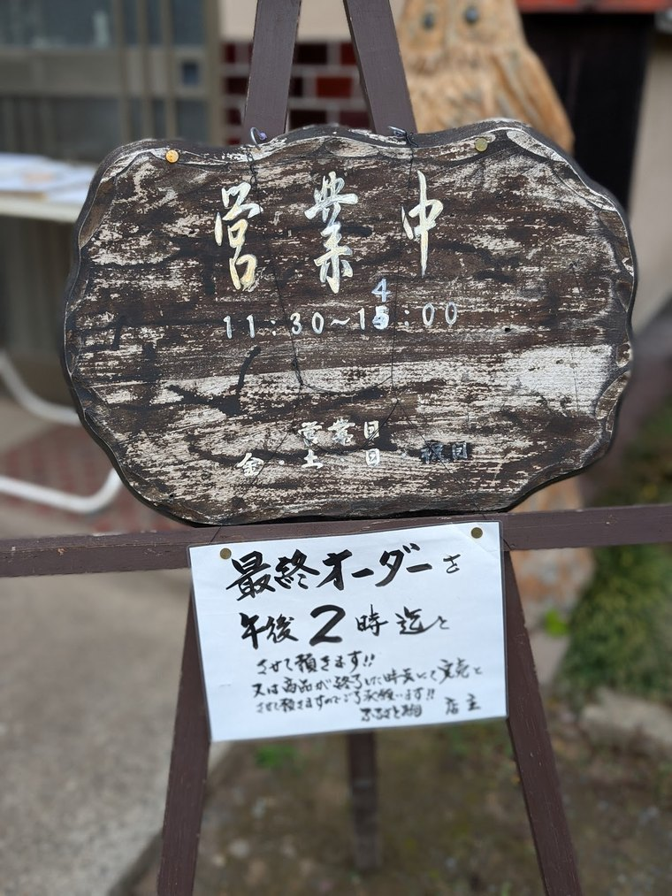
08
当店は古河市駒ケ崎、ヨシダサッカーフィールド（古河市サッカー場）の西側、道の突き当たりでございます。途中に道幅の狭いところがございますので、お気をつけてお越しくださいませ。
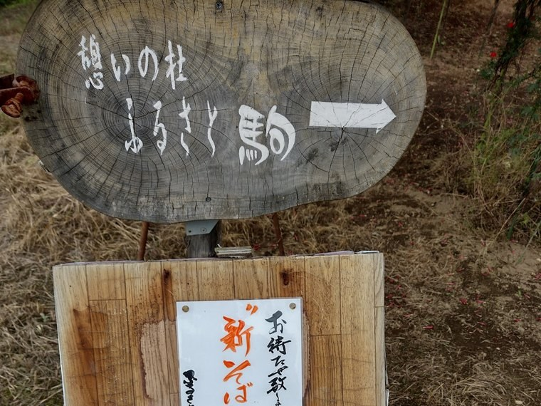
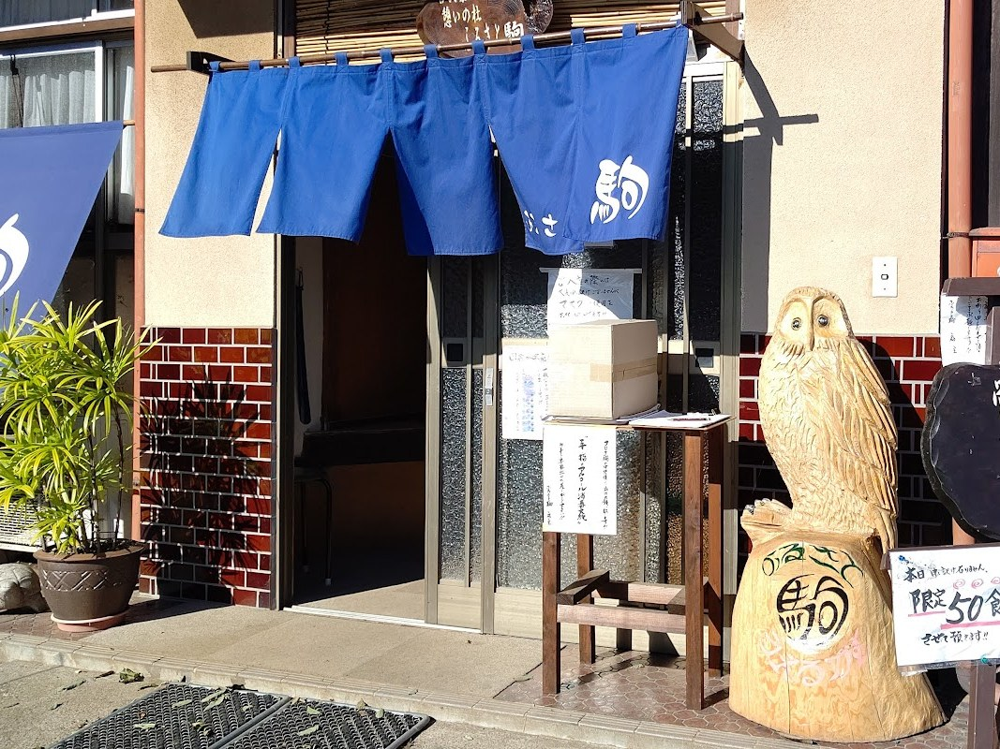
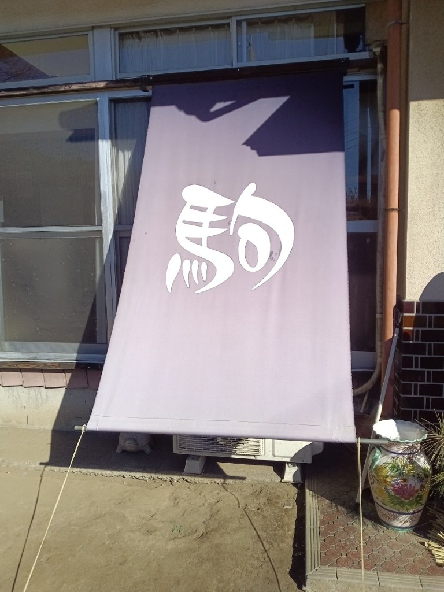
09
| 住所 | 〒306-0045 茨城県古河市駒ケ崎186 |
|---|---|
| 電話 | 080-9560-4703 |
| 営業時間 | 金・土・日、祝日 11:30〜（ご注文は14:00まで／お蕎麦が無くなり次第、その日は終い） |
| 定休日 | 月・火・水・木 |
| お席 | カウンター席・テーブル席・奥のお部屋のお席 |
| 駐車場 | あり（お車でお越しいただけます） |
| お支払い | 現金のみ |
この家で、お待ちしております。